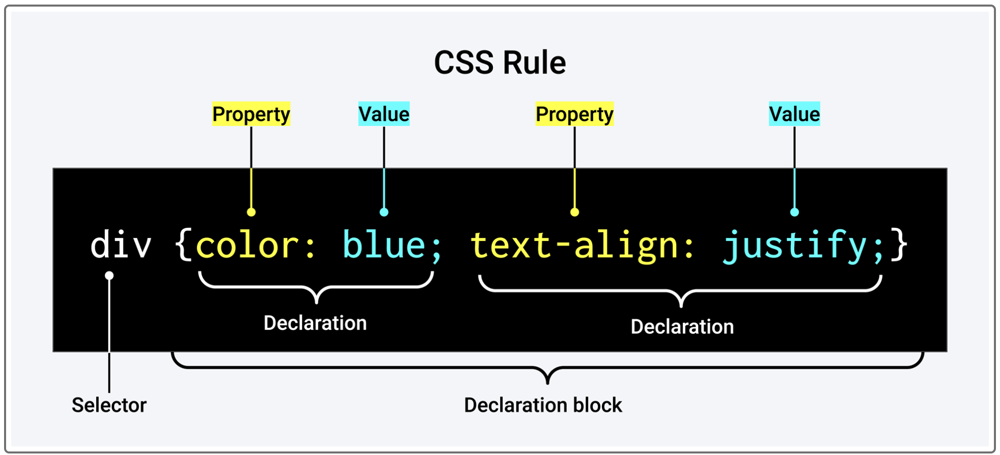

HTML
- The head element contains information about the webpage.
- The head element contains information, or metadata, that helps the browser to render the page correctly.
- Metadata is data about our webpage that the browser uses to effectively serve our webpage to users. Metadata is typically not seen by users, but it contains important information about accessibility, search engines, and performance.
- The title element is required and is extremely important for Search Engine Optimization (SEO).
- Search engine optimization (SEO) is the process of improving the ranking of a website in search engines.
- The body element represents the visible content shown to the user.
- An element is a type of content on a webpage.
CSS
- A margin indicates how much space we want around the outside of an element.
- A padding indicates how much space we want around the content inside an element.
- Every HTML element is essentially a box. Each box consists of margins outside the element, and the element's borders, padding, and content. This is sometimes referred to as the CSS box model. 
- As portrayed in the preceding image, a selector defines the element or attributes to which the rules, or declarations, will apply.
- Declarations contain two important components: the CSS property we want to apply and the value of the property. For example, the declaration color: blue; includes the CSS property color and the value for that property, blue.
Git
- git status: checks what branch we are currently on
- git checkout -b branch-name: creates a new branch and switches to it
- git checkout main: switch to main branch
- git restore --staged .:removes any changes you don’t want to commit (when they’re staged using git add .)
- git restore .: removes any changes you don’t want to commit
- git pull: is a combination of 2 commands git fetch and git merge
- git fetch: downloads changes from remote to your local repo
- git merge: applies the changes to local repo
Steps to push code to Git:
- git add .
- git commit -m "message"
- git push origin <branch name>
JavaScript
- JavaScript is a high-level dynamic programming language that allows users to interact with websites.
- A variable is a named container that allows us to store data in our code.
- Control flow is the order in which a computer executes code in a script.
- The Document Object Model (DOM) is an application programming interface (API) for HTML and XML documents. It defines the logical structure of documents and the way a document is accessed and manipulated.
- JavaScript is a weakly typed language, which means it allows implicit type conversion instead of throwing type errors.
- JavaScript is a dynamic language with dynamic types. Variables in JavaScript are not directly associated with any particular value type, and any variable can be assigned (and re-assigned) values of all types.
- All primitive types, except null and undefined, have their corresponding object wrapper types, which provide useful methods for working with the primitive values.
- Null type vs Undefined type:
- Undefined indicates the absence of a value, while null indicates the absence of an object.
- Null is a keyword, but undefined is a normal identifier that happens to be a global property.
- Null is used much less often in the core language.
- JavaScript strings are immutable. This means that once a string is created, it is not possible to modify it. String methods create new strings based on the content of the current string.
- In computer science, an object is a value in memory which is possibly referenced by an identifier. In JavaScript, objects are the only mutable values. Functions are, in fact, also objects with the additional capability of being callable.
- A value is considered falsy if it is one of the following values: 0, -0, On, "", null, undefined, NaN, or a Boolean data type with the value of false. All other values, including a Boolean with the value of true, are considered truthy.